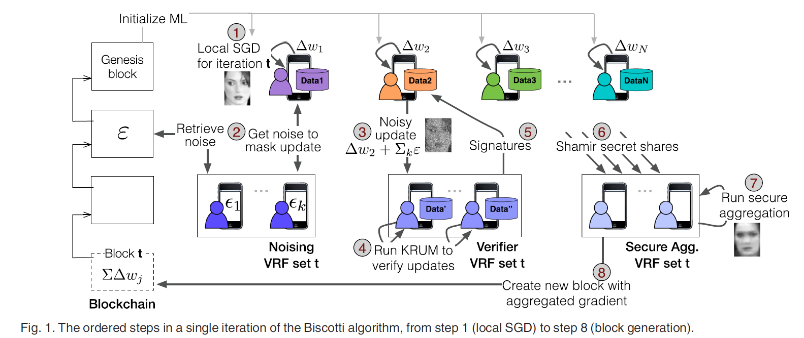

Biscotti: A Blockchain System for Private and Secure Federated Learning
本文最后更新于：2022年5月23日 中午
Biscotti: A Blockchain System for Private and Secure Federated Learning
TPDS 2021
论文提出了Biscotti，一个完全去中心化的P2P的多方机器学习方法，在分布式的P2P环境下，通过区块链和加密原语来协调对等客户端之间的隐私保护ML过程。
实验证明了方法的scalable, fault tolerant and defends against known attacks
Problem
在联邦学习中，过去被动地贡献数据地cliekts现在主动地参与到训练过程中，带来了如下问题：
- 模型投毒
- 信息泄露攻击：敌人伪装成诚实的client，通过观测目标所共享的模型更新来推断client的训练数据中的敏感信息
上述两种攻击在现有的工作中可以通过集中式的异常检测、差分隐私或安全聚合来防御。但是：
- 没有一种private且decentralized的解决方案来同时解决上述问题
- 这些方法不适用于缺乏可信权威中心的去中心化环境
由于ML中对于收敛不需要很强的共识或一致性，传统的公式协议例如拜占庭容错（BFT）对于ML框架过于严格。
Contribution
将数个先前的技术整合到一个系统中，在P2P环境中提供安全隐私的多方机器学习。
解决各种攻击的手段：
- 女巫攻击：Consistent Hashing using verifiable random functions (VRF) and proof-of-federation
- 投毒攻击：Update Validation Using Multi-Krum (Multi-Krum 拒绝与大多数更新方向大不相同的模型更新)
- 信息泄漏攻击：VRF Verifier Peers and Differentially-Private Updates Using Pre-Committed Noise
- 差分隐私的效果丢失：Secure Update Aggregation and Cryptographic Commitments
Assumptions
Design Assumptions
- 论文假设任何对等方的股权所有权都可以从区块链的当前状态公开获得。开始时的初始stake分配可能来自在线数据共享市场、竞争机构之间的共享声誉评分或来自社交网络的辅助信息。
- 假设 P2P 训练所需的所有信息都传播给第一个块中的所有节点，包括模型、超参数、优化算法和学习目标。
- 假设peer从自己的数据中抽取样本来计算模型更新的时候，是independently且uniformly的，这确保了multi-krum是准确的。
Attacker Assumptions
- 假设攻击者可以控制多个peer以进行女巫攻击，但是不会超过30%的stake
- 限制攻击者只能进行”数据被错误地标记为不同的类别“的投毒攻击
- 当对手执行信息泄漏攻击时，我们假设他们的目标是学习受害者本地数据集的属性。 论文提供记录级隐私，以防止对来自用户数据集的单个示例进行去匿名化。
Biscotti Design
Biscotti中的共识采用proof-of-federation (PoF) 机制，以在每轮训练中达成模型状态的共识。PoF机制基于PoS机制提出
在PoF中，stake定义为peer对整个系统的贡献。Peer通过提供有价值的模型更新或者通过协助共识过程以获取stake。
Goals
- 收敛到最优全局模型（在联邦学习环境中没有对手训练的相同模型）
- 通过验证peer的模型更新来防止投毒攻击
- 保证训练数据的隐私，防止信息泄露攻击
- 防止串通其他peer在没有获得足够stake的情况下获得影响力。
Design
节点加入Biscotti一起合作训练一个全局模型。分布式账本中的每个块代表 SGD 的一次迭代，账本包含每次迭代时全局模型的状态。

在每轮迭代中
- peer本地计算SGD更新
- 获取噪声，该噪声是从每个客户端独有的一组噪声对等点收集的，并由 VRF 选择
- 每个peer通过差分隐私噪声来mask他们的更新
- masked update由验证委员会验证以防止中毒。 如果通过 Multi-Krum，验证委员会中的每个成员都会签署对peer的unmasked update的承诺
- 如果大多数验证委员会的成员都签署了一个更新
- 签署后的更新通过Shamir secret shares共享
- 通过Shamir secret shares共享的update被发送给聚合委员会，聚合委员会使用安全协议来聚合出unmasked updates
- 所有的被选为认证和聚合委员会的节点将会得到系统额外的stake奖励。更新的聚合被添加到全局模型中的一个新创建的块中，该块被传播给所有对等点并附加到账本中
- 通过使用最新的全局模型以及获取的最新的stake，peer回到第1步并重复
安全聚合
目的：保证协调者只能拿到最终的模型，但不能获取特定Host的模型；
原理：上传模型时，增加随机数R；保证所有的随机数加起来的时候又能抵消；
Shamir’s Secret Sharing
秘密分享通过把秘密进行分割，并把秘密在$n$个参与者中分享，使得只有多于特定t个参与者合作才可以计算出或是恢复秘密，而少于$t$个参与者则不可以得到有关秘密。
对于sharmir(t,w)方案，就是指准备$w$把钥匙，至少要$t$把钥匙才能开启。
Initializing the Training
Biscotti peer使用创世区块中的信息来初始化训练过程，获取初始模型$w_0$、迭代次数$T$、SGD更新的创建委员会的公钥$PK$、所有peer的公钥$PK_i$、$T$次SGC迭代中每个peer预先承诺的噪声$\zeta_1, \ldots, \zeta_T$、peer的初始stake分布、区块增加时stake的更新函数
Block Design

每个Biscotti包含先前区块的哈希指针，聚合后的SGD更新以及当前全局模型的快照。为了验证聚合是诚实计算的，需要在块中包含单独的更新。 但是，单独存储它们会泄漏有关个人私人训练数据的信息。因此采用了polynomial commitments来保护隐私。polynomial commitments将SGD更新映射到椭圆曲线的一个点上。
Using Stake for Role Selection
在 Biscotti 的每次迭代中，由peer stake加权的一致哈希为系统中的一些peer指定角色（noiser、验证者、聚合者）。

Noising Protocol
每个peer i生成T个噪声向量$\zeta_t$并提交到账本，$N$个peer共生成一个$N \times T$的表。当一个peer准备好贡献梯度的时候，运行noising VRF并联系每一个noising peer $k$，请求noise向量。该peer然后使用verifier VRF来决定verifiers集合，然后想这些verifiers提交masked update, a commit to the unmasked update。同时提交noise VRF proof，向验证者证明其噪声来自作为其噪声集一部分的peers。
Verification Protocol
验证者节点对收到的更新集运行 Multi-Krum，并通过接受每轮收到的大多数更新来过滤恶意更新。
每个验证者从每个peer收到的内容如下：
- masked SGD update
- 一个commitment to the SGD update
- $k$个噪声commitment
- 一个VRF证明，确认k个噪声peer的身份
当一个验证者收到masked的update时候，它可以通过承诺的同态属性确认掩蔽的SGD update和原update、噪声是否一致。

如果满足上式则通过认证
个人总结
通过PoF机制选择验证委员会、聚合委员会，peer发送的添加了噪声的update必须要经过验证委员会的multi-krum认证
为了避免peer的update受到隐私泄露攻击，peer的update发送给验证委员会的时候要加噪声；这个噪声是通过noiser committee预先计算好的，以避免投毒攻击的攻击者将恶意梯度加上一个特定的噪声，使得相加后的结果可以通过验证委员会的认证。
在update从peer发送给聚合委员会的时候，使用了Shamir Secret Sharing协议，确保传输过程的安全
所有peer生成的update都通过polynomial commitments变换后存储在该迭代轮次对应的区块中，这样既保护隐私，也能确保聚合的结果是可以验证的。
通过具有同态性质的秘密共享